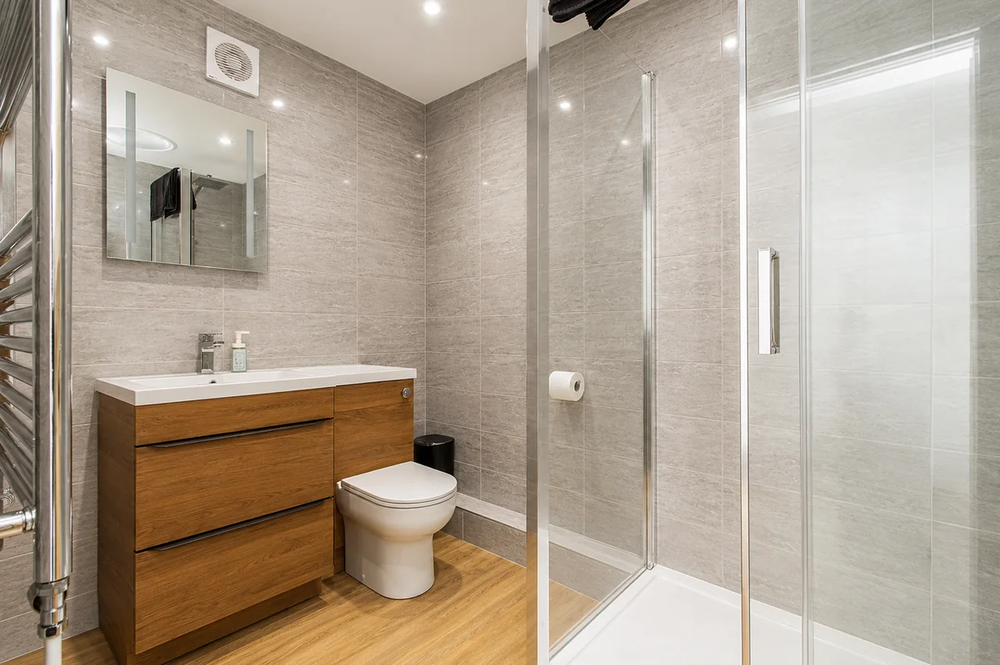
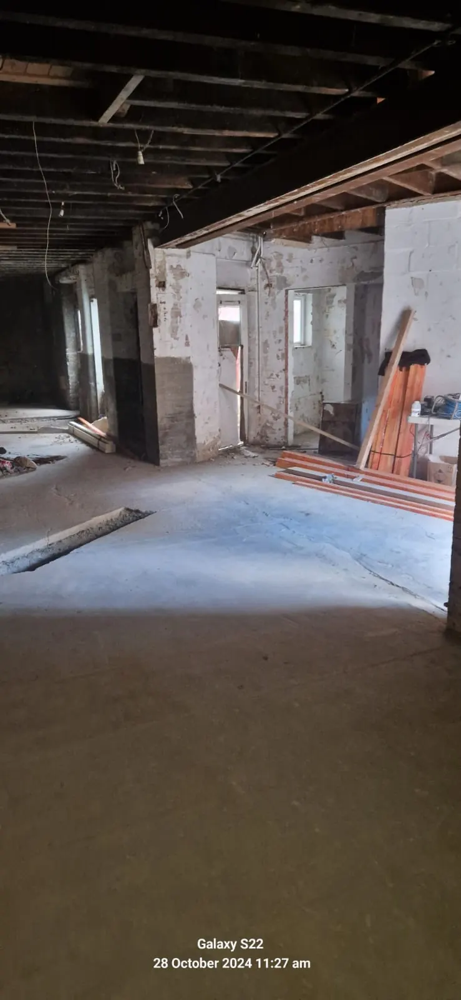
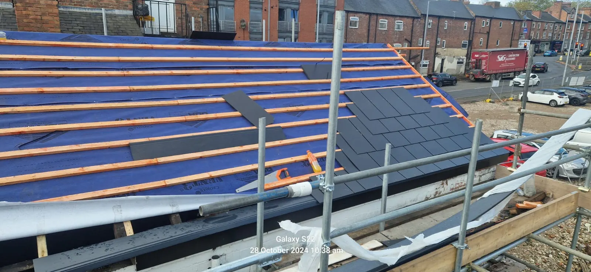
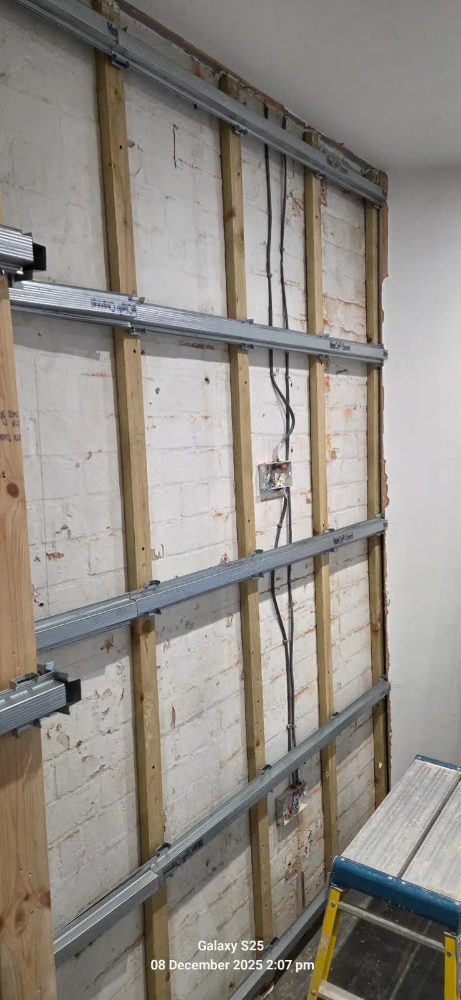
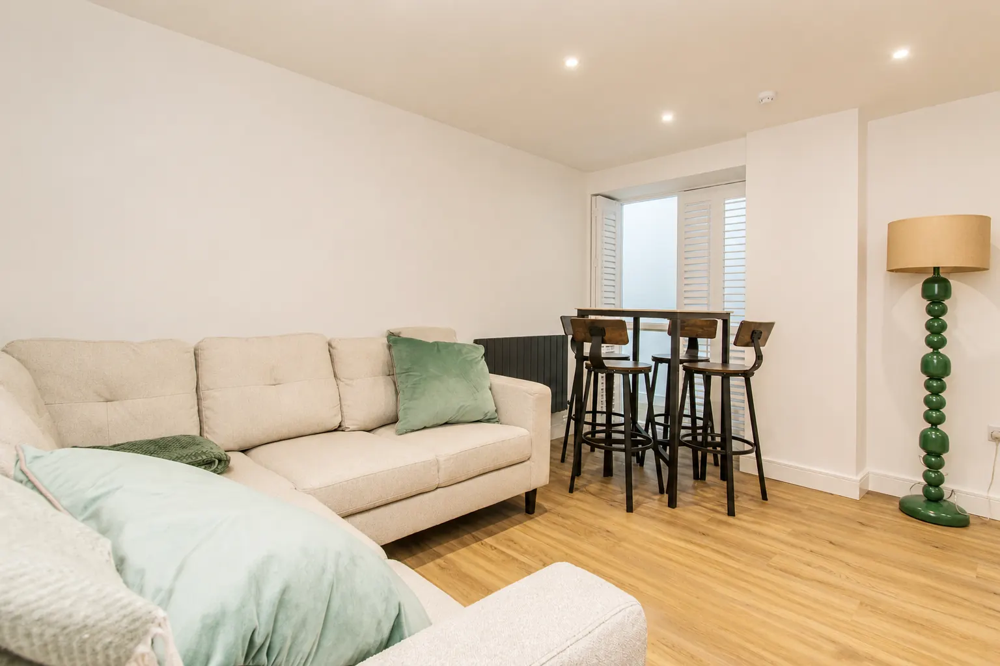
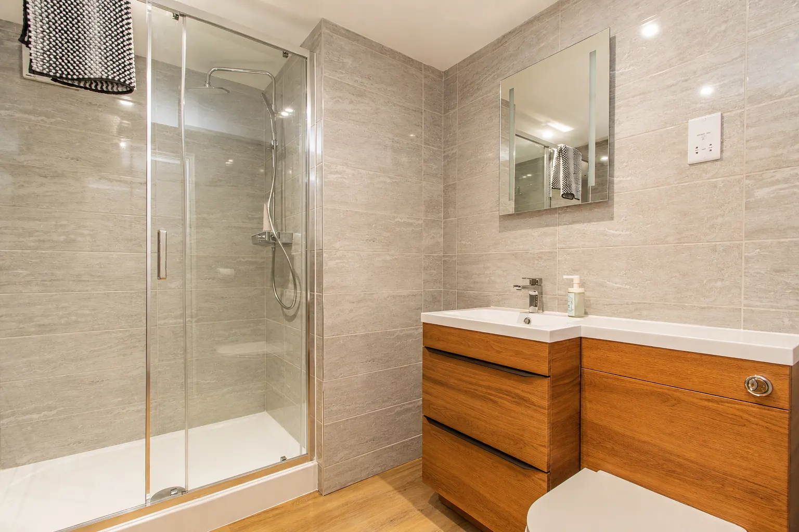

Refurbishment case study
Kilbourn Street: from stripped back to finished spaces
A visual record of an extensive Nottingham property refurbishment, covering early clearance, substantial building work and the completed interior.

Before
Exposing the actual scope
Early imagery shows spaces cleared back to the building fabric. This provides a clear starting point for sequencing the work and understanding what must happen before internal finishes.

Before Works walkthrough
Choose to load this hosted walkthrough for a wider view of the property before the works. Loading it connects your browser to Gumlet.
Work completed
Major work before the visible finish
The project record includes roof work and internal sound-insulation preparation. These images show the less visible stages that sit behind the final presentation.


Finished result
A coherent set of completed rooms
The completed photographs show fitted kitchen, lounge and en-suite areas with a consistent, practical finish.


For similar work, see Re-Let’s rental property refurbishment service in Nottingham, or combine planned improvement work into a void property turnaround where the property is between tenancies.
Walk-through
See the finished property
Both hosted players stay blocked until you choose to load them, preventing third-party video requests during the initial page load.
Finished walkthrough
This case study describes only what is visible in the supplied project record. It does not imply regulated certification or make claims about programme, cost or investment performance.
Planning a rental-property refurbishment?
Share the property, intended outcome and target timing.